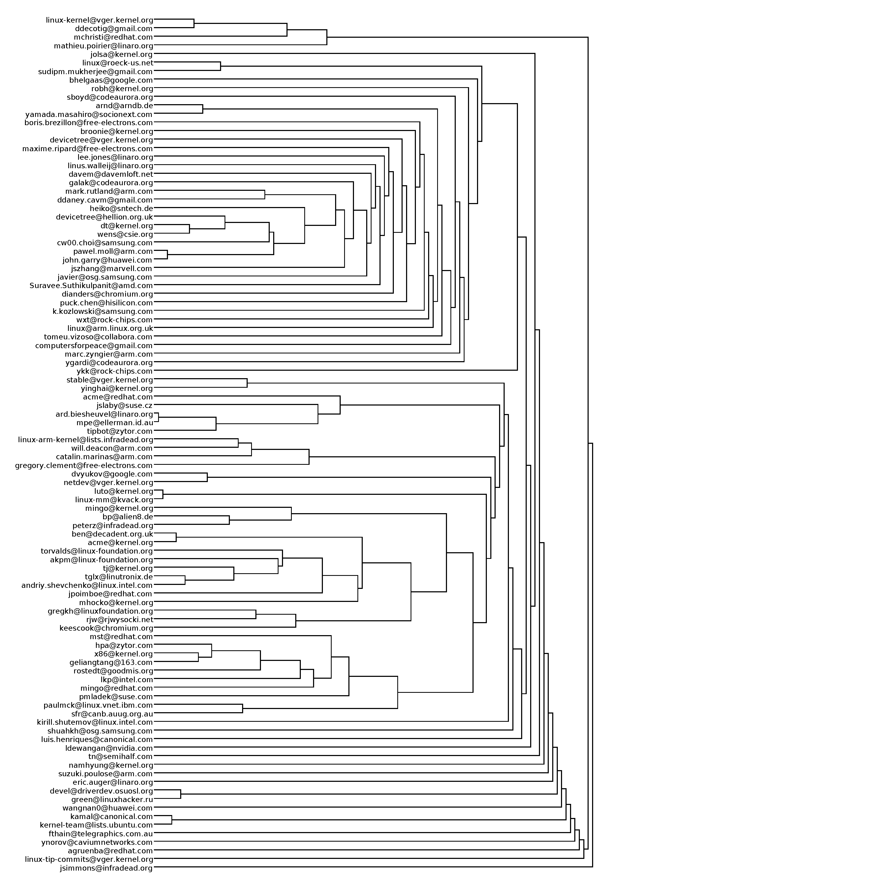

Analysis Techniques¶
This section consists of different analysis procedures that are used by MailingListParser for examining the author interactions from different mailing list threads or mails of the same thread.
Data Preprocessing¶
Data Collection Methodology for IMAP¶
From the email stream of the mailing list that has been cleaned from spam, the RFC 822 mail headers are extracted and the From, To, CC, Message-ID, In-Reply-To and the time-stamp fields are saved to a JSON file (“headers.json”) using the imap_hdr.py and imap_conn.py modules. The mapping between the UIDs and Message-IDs are stored in another JSON file (“thread_uid_map.json”) in order to facilitate the reconstruction of the threads from the Reference or In-Reply-To fields. Since we have access to the mails after the time of subscription to the mailing list, if any of the mails contain a reference to mails before subscription (in the form of a 0 in its list of references), then they represent some sort of incomplete information and cannot be included for analysis. The JSON file is cleaned to remove such orphaned children nodes using the “data_cleanup.py” module and saved to clean_data.json.
Data Collection Methodology for MBOX¶
From the .MBOX file, the header information is extracted using two predefined classes available in the Python Standard Library: Mailbox and Message, for accessing and manipulating on-disk mailboxes and the messages they contain respectively. Mailbox offers a dictionary-like mapping from keys to message and messages can be a string or a file and that contain an RFC 2822-compliant message, which is read and parsed. The messages are parsed and the header information containing the fields From, To, CC, Message-ID, In-Reply-To, Reference and Time is extracted for each message in the .MBOX file using the mbox_hdr.py module and is then saved to a JSON file (“headers.json”). The Reference and In-Reply-To fields are used to reconstruct the thread and they point to either a Message_ID or to 0 (referring to a mail not present in the mailbox file). Hence an unique Message-ID is provided to each message in the .MBOX file in the ascending order of their arrival times. The The mapping between the UIDs and Message-IDs are stored in another JSON file (“thread_uid_map.json”) in order to facilitate the reconstruction of the threads. The JSON file is then cleaned to remove orphaned children nodes using the “data_cleanup.py” module and saved to clean_data.json in a process that is similar to the one used for headers fetched directly from the IMAP servers.
Concepts¶
Message Thread Graphs¶
The idea is to generate one graph for each message thread. Each messaging thread is a directed tree with directed edge going from child mail to parent mail. If a mail elicits two responses these two child nodes are shown at the same level.
Author Interaction Graphs¶
These graphs that show the interaction between authors either through multiple edges or through edge weights. There is an edge from one author to another if the former sent a message to the latter. These graphs can be generated either thread-wise and for the entire mailing list.
Author Message Bipartite Graphs¶
The bipartite graph among all the users and messages in the mailing list such that all the users are on one side and all the messages will be on another. A directed edge would be drawn from author to the message sent by the author. A directed edge would be drawn from message to all the users who are in To and CC fields. A projection of this bipartite graph is then generated.
Width-Height Tables¶
The width height table is a representation of the number of nodes in the graph that have a given height and a given number of children in a tabular form. The width height table for the authors is a representation of the number of total and new authors in a thread aggregated at a given generation.
Analysis¶
Analysis of Threads¶
The analysis of the threads in the mailing list utilizes the graph_nodes.csv, graph_edges.csv and clean_data.json files generated during the data collection process. The graph_generate_dot.py and graph_generate_gexf.py modules generate the graph files in GEXF, DOT and PNG formats, which are the used for further analysis and for verification of results on a thread level basis. The wh_table_threads.py module generates a width height table for the authors graph and saves it as a CSV file. The width height table is a representation of the number of nodes in the graph that have a given height and a given number of children in a tabular form. This table can further be used for non-parametric estimation. The time_statistics_threads.py module generates a frequency distribution of the inter-arrival times between nodes in threads and another distribution of the length of threads.
_**A note on ignoring lone author threads:**_ Many of the analysis modules allow for ignoring threads that have only a single author. This is preferable as such threads don’t correspond to interactions between individuals and more often than not are patches. If another author joins the thread, then it becomes a conversation between multiple individuals and the thread is no longer ignored in the analysis. Further, this allows for comparisons of the results of the analysis between the cases where such threads are ignored or taken into consideration.
The analysis was centered on the following topics: 1. thread width-height table: we need to perform frequency interpretation of this table with 1% and 5% significance cutoffs; we can also try the non-parametric estimation / kernel density functions on the frequency data to summarize the data into a standard form. 2. thread length analysis 3. message arrival time analysis: Initial hypothesis was that the message arrival time would be Poisson, however it is not the case. A proper fitting to a well-known distribution would be good.
Server model¶
A suggestion from Ramprasad Joshi is to model each user as a server in a circle. The servers can arrive and depart at a predictable churn rate. The servers can issue tokens aka ask questions on the mailing list; the issued tokens can be consumed by any server including the source itself. A source consuming its own token is equivalent to a source sending an email question and answering the question herself. A service model has to be evolved on top of this theoretical framework. A few questions that we can ask on this framework are: 1. What is the churn rate? Is it an invariant? 1. What are the characteristics of message arrival and servicing times?
Analysis of Author Interactions¶
The author-centric analysis primarily uses clean_data.json for referring to the To, CC, and From fields as indexed by the graph_nodes.csv and graph_edges.csv files. The analysis of the temporal behaviour of the authors is done on an author_centric temporal multigraph or a weighted graph depending on the requirements. These graphs are generated by the graph_generate_authors.py module. This graph is also used to generate a width height table for the authors which is a representation of the number of total and new authors in a thread aggregated at a given generation. The participant_size table is also generated which is a series between the number of mails in a thread and the corresponding number of authors who have participated in that thread. There seems to be a correlation between the number of authors participating in a discussion and the number of generations in (length of) a discussion thread.
We can take three kinds of graphs for any temporal graph. They are: aggregate graph, time window graph, probabilistic edge decay (PED) graph. All three of these must be tried on the authors’ interaction graph. Another interesting aspect of this graph is to find the natural recurrence cycle for the graph. Once the graphs are created, we can find the following network properties: 1. Degree distribution 1. Popular authors 1. Mean path length and other relevant centrality measures 1. Community detection
Community Detection¶
Community detection algorithms are used to find the clustering and modularity coefficients across timescales, and associate relevant labels for communities and the authors belonging to them through text mining. The Infomap community detection algorithm pertaining to weighted and directed links was used for the multilevel community detection analysis. The Infomap algorithm is based on information theoretic principles. It tries to build a grouping which provides the shortest description length for a random walk on the graph, where the description length is measured by the expected number of bits per vertex required to encode the path of a random walk. The Edge-betweenness community detection algorithm is a hierarchical decomposition process where edges are removed in the decreasing order of the number of shortest paths that pass through a given edge, which is termed as the edge-betweenness score. This method is slow due to the computational complexity of calculating the edge-betweenness scores, which have to be calculated every iteration (after each edge removal).
Dendrograms, which are tree diagrams used to show the arrangement of clusters identified by the hierarchical clustering algorithms, were plotted with using the results given by the aforementioned algorithms, along with the vertex clustering for the Infomap method. Due to the restrictions in visually representing a large number of authors, the 1000 most active authors in the mailing list were used for plotting the dendrograms.
Dendrogram from the Edge-betweenness Method
Dendrogram from the Infomaps Method

Vertex Clustering from the Infomap Method

Keyword Digest¶
The keywords pertaining to each author was extracted after the tokenization and lemmatization of the mails. The WordNet lemmatizer was used and a custom set of stop words that included common English words along with frequently used technical jargon were removed after tokenization. From this keyword digest of the authors, a term-document matrix was constructed such that the columns of the matrix are the users and the rows of the matrix correspond to the keywords. Each entry equals the tf-idf normalized coefficient of the keyword for a user. If a keyword is not present in the top-10 keywords of a user, then the corresponding matrix entry would be zero. On the resultant matrix, singular value decomposition (SVD) was performed to reduce the dimensions that need to be considered. From SVD analysis, the diagonal values of the transformation matrix tell us the most important clusters of keywords for all the users. The 95th percentile of these diagonal elements turned out to be at the 531st element out of 1000 elements.
Using the top-10 keywords of each author, the recurring keywords of the group was computed. The clusters provided by the Infomap clustering algorithm was used for this purpose. In order to complete this step, chi-square goodness of fit was performed on the document-term matrix, i.e., the transpose matrix of the term-document matrix.
Statistical Results¶
Statistics on the Discussion Threads¶
1. Width-Height Table for Threads¶
The width height table is a representation of the number of nodes in the graph that have a given height and a given number of children in a tabular form. The wh_table_threads.py module generates a width height table for the authors graph and saves it as a CSV file.

2. Discussion Thread Lengths¶
- A typical discussion thread can span 3 generations (with 1 Standard Deviation(s)) and 2 authors participating (with 0.5 Standard Deviation(s)) in the discussion. The following are the 95th and 99th percentile thread lengths:
- Ignoring threads that have only a single author:
- 95th Percentile Thread Length: 1238550.0 secs. or 344.04 hrs.
- 99th Percentile Thread Length: 3603957.0 secs. or 1001.01 hrs.
- Including threads that have only a single author:
- 95th Percentile Thread Length: 1812083.0 secs. or 503.36 hrs.
- 99th Percentile Thread Length: 4674019.0 secs. or 1298.34 hrs.
- Thus, by ignoring the threads that have only a single author, it takes 21 days for 95% of the threads in the LKML to end and 54 days for 99% of the threads to end.


3. Message Activity Heatmaps¶
To estimate the user activity on an online community, we divide the 24 hours of a day into 48 bins of 30 minutes each. Each bin consists of the number of messages sent during that particular time interval. The daily bins are aggregated into monthly bins. The activity information gained from such heatmaps would inform the new users of a mailing list about the peak hours and increase the chances of participating in active conversations during specific times of a day. The following heatmap shows the weekly message activity:

The following heatmap shows the weekly message activity:

Statistics on the Author Network¶
1. Width Height Table for the Author Interaction Graph¶

The width height table for the authors is a representation of the number of total and new authors in a thread aggregated at a given generation.
2. Participant-Size Table¶

The participant_size table is a series between the number of mails in a thread and the corresponding number of authors who have participated in that thread. The first twenty entries of this table is given above.
3. Degree Distribution of Authors¶

The degree distribution of the nodes is as expected having a mean of zero (as sum of in-degrees = sum of out-degrees) with a standard deviation of 57.22. The degree distribution curve is bell shaped without any skew and is centered at zero. Excluding some outliers, most of the degree differentials are around zero with 90th percentile of 23 and 95th percentile of 42 for the absolute values of the degree differentials.
4. Author Thread Participation¶

An author is said to be an active participant in a thread if he has sent at least one mail in the thread. This graph represents the total number of threads each author has participated in. It can be seen that majority of the subscribers to the mailing list are passive observers. This finding correlates with the observations from hyperedges generated for the threads.
5. Distribution of Hyperedges among Authors¶

This graph represents the number of receiving vertices upon which the hyperedge is incident on, with the y-axis measuring the number of such hyperedges incident on the corresponding number of edges represented by the x-axis. The graph resembles a Poisson curve where it peaks such that maximum number of hyperedges are incident on 5 vertices and then decreases from that maximum.
6. Conversation Refresh Times (CRT)¶

For a pair of users, this refers to the time when one conversation (or a thread) ends and another one starts and for overlapping conversations, the last matching messages are considered. These times are generated as a probability distribution (PDF) and then plotted as a histogram between the conversation refresh times (in seconds) and frequency.
7. Clustering Coefficients of the Authors¶
For unweighted graphs, the clustering of a node u is the fraction of possible triangles through that node that exist, and for weighted graphs, the clustering is defined as the geometric average of the subgraph edge weights. Clustering coefficients for the author’s network was generated using the clustering module of the NetworkX package.
Conclusions¶
- A typical discussion thread can span 3 generations (with 1 Standard Deviation(s)) and 2 authors participating (with 0.5 Standard Deviation(s)) in the discussion. The following are the 95th and 99th percentile thread lengths:
- Ignoring threads that have only a single author:
- 95th Percentile Thread Length: 1238550.0 secs. or 344.04 hrs.
- 99th Percentile Thread Length: 3603957.0 secs. or 1001.01 hrs.
- Including threads that have only a single author:
- 95th Percentile Thread Length: 1812083.0 secs. or 503.36 hrs.
- 99th Percentile Thread Length: 4674019.0 secs. or 1298.34 hrs.
- Thus, by ignoring the threads that have only a single author, it takes 21 days for 95% of the threads in the LKML to end and 54 days for 99% of the threads to end.
- For discussions that happen slowly in time, authors arrive slowly and the discussion spans many generations. In contrast, for discussions that end quickly (non-singular) in time, authors arrive quickly and the discussion ends within a few generations. This difference in the temporal characteristics of the authors can be attributed to the type of the topic. For popular topics, authors come in quickly from many sources whereas for specialized topics help trickles in slowly over time leading to a _skinny_ and long thread. (Question: What are these popular threads? Can text mining help us detect popular topics?)